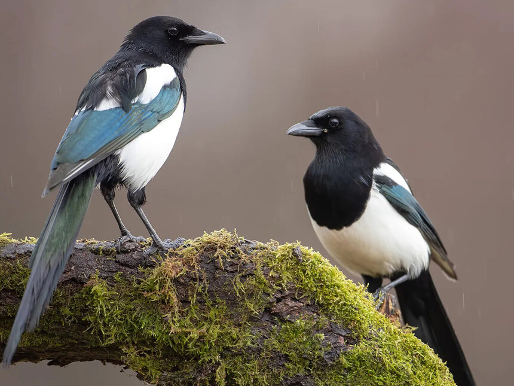
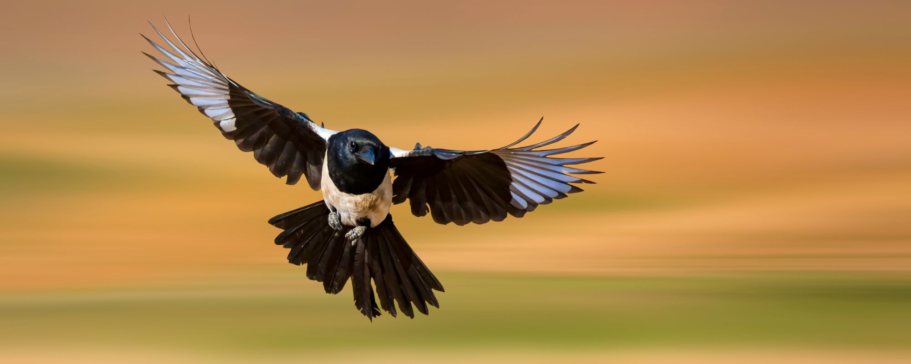

Las urracas son aves de tamaño mediano, midiendo alrededor de 45 a 60 centímetros de largo, incluyendo su larga cola.
Su plumaje es principalmente negro, pero su espalda y alas tienen un distintivo patrón de rayas blancas.
Además, tienen un parche blanco en las plumas primarias que es visible cuando vuelan.
Su cola larga y bifurcada es una característica distintiva que las diferencia de otras aves.
Distribución Geográfica
Estas aves se encuentran en una variedad de hábitats, desde zonas urbanas y bosques hasta áreas rurales y montañas.
Tienen una distribución geográfica que se extiende por Europa, Asia y partes de África, y su adaptabilidad les ha permitido prosperar en diferentes entornos.
Esta es una de las áreas donde más urracas he visto yo:
Comportamiento Inteligente
Una de las características más notables de las urracas es su inteligencia.
En este video una urraca selecciona, en función del peso, cuál es el mejor pistacho cacahuete.
Algunos estudios han demostrado que las urracas pueden recordar la ubicación de cientos de puntos de almacenamiento de alimentos, lo que demuestra una excelente memoria espacial.
Además, su comportamiento social es intrigante. Las urracas son aves sociales que a menudo forman grupos familiares. En estas agrupaciones, cooperan en la búsqueda de alimento y se comunican de manera efectiva a través de una variedad de vocalizaciones y señales visuales.

Dieta y Alimentación
Las urracas son omnívoras y tienen una dieta variada. Se alimentan de:
insectos
pequeños mamíferos
huevos de otras aves
frutas
semillas
a veces, comida humana cuando se encuentran en áreas urbanas
Su adaptabilidad alimentaria les permite sobrevivir en una variedad de entornos y condiciones climáticas.
Estas aves también juegan un papel importante en los ecosistemas donde se encuentran. Ayudan a controlar las poblaciones de insectos al alimentarse de ellos y, al dispersar las semillas de las frutas que consumen, contribuyen a la propagación de plantas. Además, su papel en la cadena alimentaria como presas para aves rapaces y carnívoros es crucial para mantener el equilibrio ecológico.

Las urracas son excelentes voladoras
Mitología y Simbolismo
A lo largo de la historia, las urracas han sido objeto de mitos y simbolismo en diversas culturas. En algunas tradiciones, se les ha asociado con la magia, la inteligencia y la astucia debido a su aparente habilidad para adquirir objetos brillantes y su comportamiento social complejo.
Las urracas no se consideran actualmente en peligro de extinción y su población se mantiene estable en muchas áreas. Sin embargo, como sucede con muchas especies de aves, enfrentan amenazas como la pérdida de hábitat debido a la urbanización y la agricultura intensiva. La conservación de sus hábitats naturales y la promoción de prácticas de manejo sostenible son clave para garantizar su supervivencia continua.
En conclusión, las urracas son aves sorprendentes que han cautivado a la gente a lo largo de la historia debido a su inteligencia y su adaptabilidad. A través de su presencia en una variedad de entornos y su capacidad para resolver problemas, estas aves demuestran la belleza de la naturaleza y la diversidad de la vida en nuestro planeta.